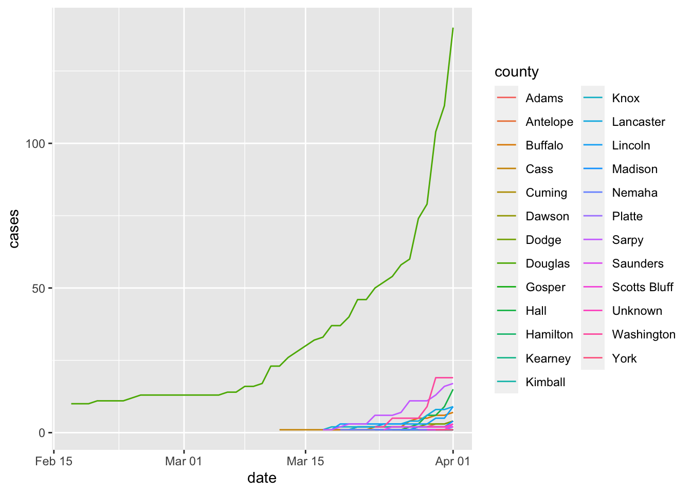
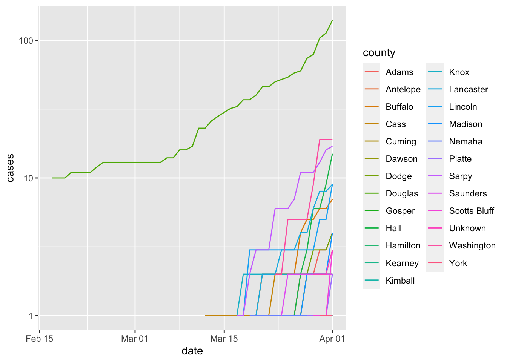
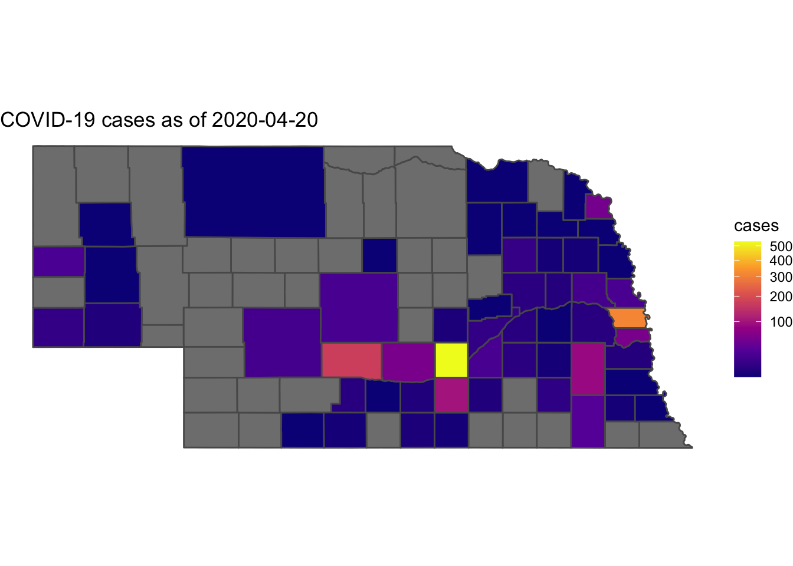

Chapter 23 Automating geographic analysis
One thing that has been very apparent with the coronavirus outbreak is that this is a very geographic story. Where cases are being found and how fast is news, so it would be a good idea for us to have updating maps. But to have that, we need to have updating data.
Good news.
The New York Times is making the data behind their interactive trackers available to others for free.
So we have a constantly updating data stream on Github, so that means we can make this work.
Let’s get our libraries first:
We can use read_csv to read a URL if that URL is to a csv file. And Github just happens to provide a direct link to the CSV of county COVID-19 reports. Here’s what that looks like:
## Parsed with column specification:
## cols(
## date = col_date(format = ""),
## county = col_character(),
## state = col_character(),
## fips = col_character(),
## cases = col_double(),
## deaths = col_double()
## )Let’s look at what the New York Times is providing us:
## # A tibble: 6 x 6
## date county state fips cases deaths
## <date> <chr> <chr> <chr> <dbl> <dbl>
## 1 2020-01-21 Snohomish Washington 53061 1 0
## 2 2020-01-22 Snohomish Washington 53061 1 0
## 3 2020-01-23 Snohomish Washington 53061 1 0
## 4 2020-01-24 Cook Illinois 17031 1 0
## 5 2020-01-24 Snohomish Washington 53061 1 0
## 6 2020-01-25 Orange California 06059 1 0If you look, we have a county and a date – how many cases are reported in that county on that day. That means we can do some interesting progression charts.
Let’s filter out Nebraska first.
And we can create line chart like this:

The little county on the bottom that curves sharply up? That’s my home county, Washington County. One day of this writing, they added 10 cases in one day in one nursing home. Grim stuff.
The curve you see for Douglas County is a classic exponential curve. Because the number of cases here are small, we can get away with it for a little while. But when looking at much larger places, you’d use a log scale. YOU REALLY SHOULD WATCH THIS. You’ve no doubt seen the Financial Times coronavirus trajectory tracker. Hear why they are using a log scale. And here’s what our chart looks like with it. Note the y-axis scale.

23.1 Mapping continuously
But for a map, we can’t have multiple days. We need a single day. Ideally, it would be the most recent date. We can get it using the max function.
That will give us the most recent date in Nebraska in a variable called current. And now we can filter the most recent data for Nebraska, regardless of when this runs.
I’m adding one piece to the end to make joining this to a map easier and just renaming fips to GEOID, because they are identical in both datasets and can be used for joining.
Now we can read in our counties map layer.
## Reading layer `cb_2018_us_county_5m' from data source `/Users/mwaite3/Box/BookProjects/DataJournalismWithR/data/cb_2018_us_county_5m/cb_2018_us_county_5m.shp' using driver `ESRI Shapefile'
## Simple feature collection with 3233 features and 9 fields
## geometry type: MULTIPOLYGON
## dimension: XY
## bbox: xmin: -179.1473 ymin: -14.55255 xmax: 179.7785 ymax: 71.35256
## epsg (SRID): 4269
## proj4string: +proj=longlat +ellps=GRS80 +towgs84=0,0,0,0,0,0,0 +no_defsAnd join the two together.
## Joining, by = "GEOID"## Warning: Column `GEOID` joining factor and character vector, coercing into
## character vectorSince we have every county in the United States in our counties map layer, we can filter just Nebraska like this:
So now, we have a geographic dataframe that has both the county shapes and the number of cases in the most recent data update. We just need to see it now:
ggplot() +
geom_sf(data=necounties, aes(fill=cases)) +
scale_fill_viridis_c(option = "plasma", trans = "sqrt") +
theme_void() +
labs(title = paste("COVID-19 cases as of ", current[[1]], sep=""))
As it stands, we can run this every day and get an up-to-date map.